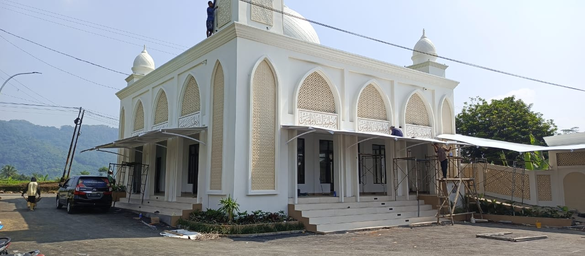

Kanopi Membrane
Kanopi rumah, carport, dan teras dengan rangka baja ringan serta membrane anti-panas dan anti-UV.
Solusi membrane untuk setiap kebutuhan
Dari carport rumah hingga atap stadium — dikerjakan oleh tim ahli dengan material membran premium dan teknik fabrikasi presisi.
Kanopi rumah, carport, dan teras dengan rangka baja ringan serta membrane anti-panas dan anti-UV.
Paviliun, tenda pesta, dan tenda exhibition dengan bentuk lengkung yang ringan, cepat dipasang, dan kokoh.
Atap membrane skala besar untuk stadium, amphitheater, mall, dan area publik dengan bentang lebar tanpa kolom.
Desain bebas: kanopi jemur, shading kolam renang, walking canopy, hingga facade membrane dengan bentuk geometri apa pun.
Perhitungan struktur, analisis beban angin, visualisasi 3D, dan RAB transparan sebelum produksi dimulai.
Servis membrane, ganti kain, perbaikan rangka, dan re-branding pada struktur membrane yang sudah berdiri.
Setiap proyek dimulai dari konsultasi dan survey gratis, lalu desain 3D, fabrikasi di pabrik kami sendiri, dan instalasi oleh tim bersertifikat. Anda memantau setiap tahapnya.
